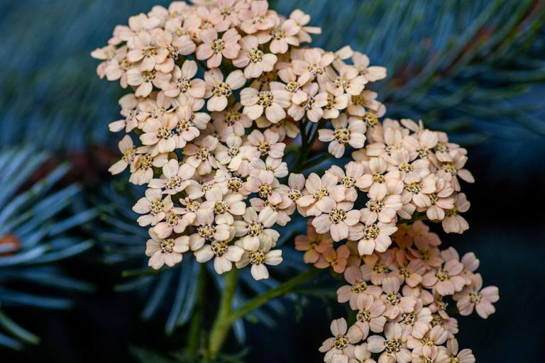
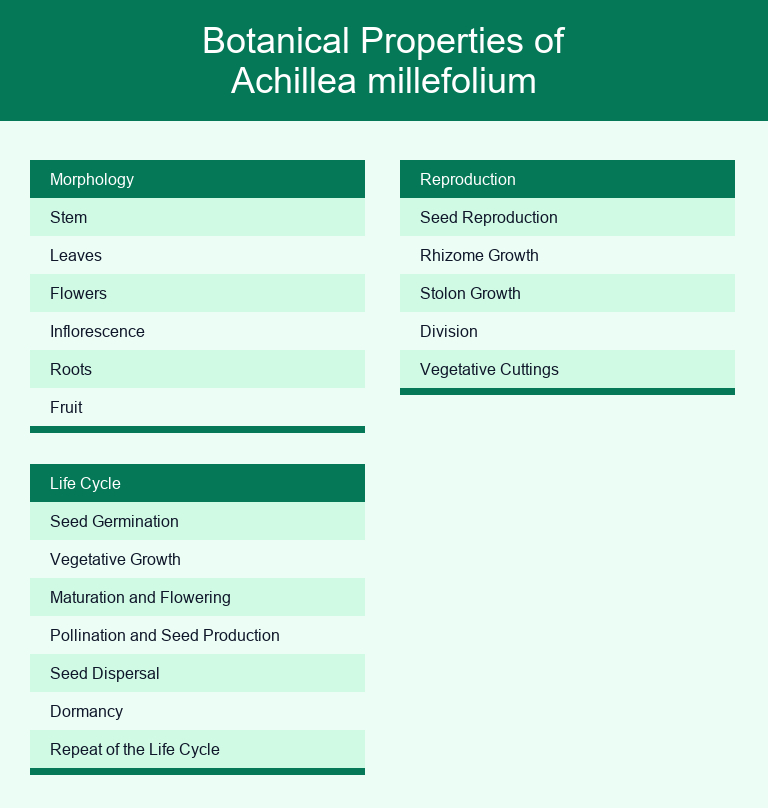
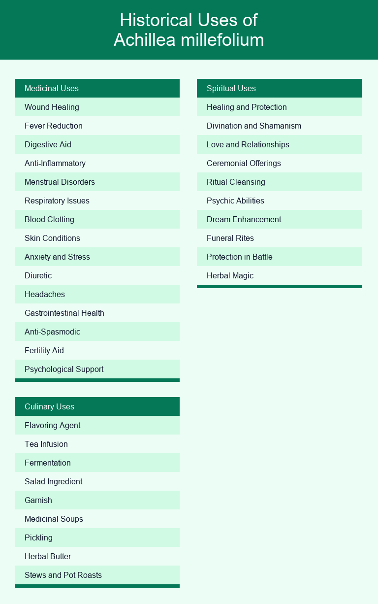

5204
26 minutes
Yarrow (Achillea millefolium): A Botanical, Medicinal and Culinary Guide

What is the botanical classification of Yarrow?
Yarrow, with botanical name of Achillea millefolium (A. millefolium), is a plant that belongs to the Asteraceae family and the Achillea genus.
According to traditional classification (taxonomy), this plant is classified under the Asterales order, the Eudicots class, and the Plantae kingdom (in the Eukarya domain).
Here is a list showing the full taxonomy of A. millefolium, in hierarchical order.
- Domain: Eukarya
- Kingdom: Plantae
- Phylum: Angiosperms
- Class: Eudicots
- Order: Asterales
- Family: Asteraceae
- Genus: Achillea
- Species: millefolium
What are the common names of Achillea millefolium?
The most common name for this plant is Yarrow, but other common names are Common Yarrow and Milfoil.
Here is a list of the most common names of A. millefolium ordered by popularity, with a brief description of each name.
- Yarrow: The most commonly used name for the plant, "yarrow" is a straightforward reference to the species.
- Common Yarrow: Similar to "yarrow," this name indicates that it's the most widespread and well-known species of yarrow.
- Milfoil: This name comes from the plant's finely divided leaves, which resemble a thousand tiny leaves or "millefolium" in Latin.
- Thousand-Leaf: A direct translation of "millefolium," this name describes the plant's feathery, finely divided leaves.
- Soldier's Woundwort: Reflects the historical use of yarrow to treat wounds, particularly on soldiers in battle.
- Nosebleed Plant: Yarrow was traditionally used to stop nosebleeds by stuffing the leaves into the nostrils.
- Bloodwort: Suggests its traditional use for staunching bleeding wounds.
- Old Man's Pepper: May refer to the plant's spicy aroma or its use as a seasoning in traditional cooking.
- Staunchweed: Indicates its historical use for stopping bleeding.
- Sanguinary: This name also relates to its use in treating bleeding and wounds.
- Devil's Nettle: Likely due to the feathery, nettle-like leaves, though it is not related to true nettles.
- Knight's Milfoil: Possibly associated with its use in treating wounds suffered by knights in medieval times.
- Carpenter's Weed: Suggests its use among carpenters for its potential healing properties, particularly for minor cuts and wounds.
What are the regional variations of Achillea millefolium?
The regional variations (subspecies) of this plant are Paprika, Moonshine, and Apple Blossom.
In the following list, you can find the most common variations of A. millefolium, their unique characteristics, and their main regional location.
- Paprika: Known for its fiery red flowers resembling the spice, Paprika is popular in North America and Europe for its vibrant color.
- Moonshine: Moonshine features distinctive lemon-yellow flower clusters and is widely grown in North America for its bright appearance.
- Apple Blossom: This variety showcases soft pink blooms reminiscent of apple blossoms and is commonly seen in gardens across Europe.
- Cerise Queen: Cerise Queen boasts striking cerise-pink flowers and is favored in gardens throughout North America and Europe.
- Saucy Seduction: Notable for its deep red flowers, Saucy Seduction is a popular choice in North American gardens.
- Strawberry Seduction: Featuring strawberry-red blooms, this variety is well-loved in North America for its charming appearance.
- Fire King: Fire King is cherished for its vibrant orange-red flowers and can be found in gardens in North America.
- Red Velvet: Red Velvet stands out with its rich, velvety-red flowers and is grown in gardens across North America.
- Terracotta: This variety has unique terracotta-colored blooms and is commonly cultivated in Europe for its warm hues.
- Summer Pastels: Summer Pastels offers a mix of soft, pastel-colored flowers and is popular in North American and European gardens for its gentle, multicolored display.
Where does Achillea millefolium grow?
The Achillea millefolium is mainly present in Europe and in Asia.
In the following table, you can find the estimated distribution of this plant in each continent (ordered from highest to lowest).
| Continent | Estimated Distribution |
|---|
| Europe | Abundant |
| Asia | Abundant |
| North America | Common |
| South America | Common |
| Africa | Scarce |
| Oceania | Scarce |
| Antarctica | Scarce |
Here's a list of the regional distribution of this plant.
- North America: It is native to North America and can be found in a wide range of habitats, including meadows, grasslands, prairies, and along roadsides.
- Europe: It is also native to Europe and can be found in similar habitats as in North America, including meadows, grasslands, and disturbed areas.
- Asia: It has a wide distribution in Asia, including regions like the Himalayas, where it can be found in alpine meadows and open woodlands.
- Australia: It has been introduced to Australia and can be found in various habitats, including grasslands, pastures, and along roadsides.
- South America: It has naturalized in parts of South America, including Chile and Argentina, where it can be found in grasslands and disturbed areas.
- Africa: In Africa, it has been introduced and can be found in a variety of habitats, including grasslands and open woodlands.
What's its favorite habitat?
This plant mainly grows in grasslands, roadsides, and fields, but it can be also found in many other places.
Here's a list of the habitats that this plant prefers.
- Grasslands: It is often found in open grasslands and meadows. It thrives in areas with well-drained soil and plenty of sunlight.
- Roadsides: It is a common sight along roadsides and highways. It can tolerate disturbed areas and is often found in areas with compacted soil.
- Fields: It can be found in agricultural fields, particularly in areas where the soil has been disturbed by plowing or other farming activities.
- Woodland Clearings: While it prefers open, sunny habitats, it can sometimes be found in woodland clearings and along the edges of forests.
- Disturbed Areas: It is known to colonize disturbed areas such as construction sites, vacant lots, and areas with soil erosion.
- Coastal Areas: In some regions, it can be found in coastal habitats, including sand dunes and salt marshes.
- Waste Grounds: It is adaptable and can thrive in waste grounds and abandoned areas.
- Gardens: Many people cultivate it in their gardens as an ornamental plant, and it can thrive in a variety of garden settings.
- Alpine Meadows: In mountainous regions, it can be found in alpine meadows and subalpine zones.
- Riparian Zones: It can be found along the banks of streams and rivers in some regions.
What are the botanical characteristics of Achillea millefolium?
The following illustration shows you this classificaion visually.

Morphology
This plant is composed of stem, leaves, flowers, inflorescence, roots e fruit.
Here's a brief description of each part.
- Stem: It typically has slender, erect stems that can grow to a height of 1 to 3 feet (30 to 90 cm). The stems are usually green and can become somewhat woody at the base as the plant matures.
- Leaves: The leaves of this plant are finely divided and have a fern-like appearance. They are arranged alternately along the stem. The leaves are usually pinnate or bipinnate, with numerous small leaflets that are linear or lance-shaped. The leaf color can range from dark green to gray-green.
- Flowers: It produces dense, flattened clusters of small, daisy-like flowers at the tips of its stems. The individual flowers are tiny and have five white to pinkish ray florets (the petal-like structures) surrounding a central disk of yellow or cream-colored disc florets. The flowers are typically arranged in a broad, flat-topped inflorescence known as an umbel.
- Inflorescence: The inflorescence of this plant is composed of numerous flower heads arranged in a corymb or panicle. These flower heads are held above the foliage and create a striking display when in bloom.
- Roots: It has a fibrous root system that is relatively shallow, allowing it to spread easily.
- Fruit: After flowering, this plant produces small, dry, seed-like fruits known as achenes. These achenes are dispersed by wind.
Life cycle
The life cycle phases of this plant are seed germination, vegetative growth, maturation and flowering, pollination and seed production, seed dispersal, dormancy e repeat of the life cycle.
Here's a brief description of each phase.
- Seed Germination: The life cycle of this plant begins with the germination of seeds. It seeds typically require specific environmental conditions to germinate, including moisture and light. Once the conditions are favorable, the seeds will sprout, and young seedlings will emerge.
- Vegetative Growth: After germination, the seedlings start growing and develop their vegetative structures. During this stage, It forms a rosette of finely divided, feathery leaves close to the ground. The plant continues to grow and establish a root system.
- Maturation and Flowering: It usually reach maturity in their second year. In the late spring or early summer of the second year, they produce tall, erect stems that can reach heights of up to 3 feet (1 meter) or more. The leaves become more deeply divided, and the plant starts to produce clusters of small, tightly packed flowers. It flowers come in various colors, including white, pink, and yellow, depending on the variety.
- Pollination and Seed Production: It is a hermaphroditic plant, meaning each flower contains both male and female reproductive organs. Pollinators, such as bees and butterflies, visit the flowers to collect nectar and inadvertently transfer pollen, facilitating the fertilization process. Once pollinated, the flowers develop into seeds. The seeds are produced in small, dry, and seed-like structures called achenes.
- Seed Dispersal: As the seeds mature, they are dispersed by various means. It achenes are equipped with small hairs that allow them to be carried by the wind to new locations. They can also be dispersed by animals or through human activities.
- Dormancy: It can produce a large number of seeds, and many of these seeds may remain dormant in the soil for an extended period, sometimes several years. This dormancy allows It to persist in the environment even when growing conditions are not ideal.
- Repeat of the Life Cycle: It is a perennial plant, which means that the mature plant does not die after flowering and producing seeds. Instead, it continues to grow and reproduce year after year. It can form clumps or colonies in suitable habitats, and the life cycle repeats with the emergence of new seedlings.
Reproduction
Here's listed the different ways yarrow reproduce and propagate.
- Seed Reproduction: It produces small seeds that are dispersed by wind, water, or animals. When the plant flowers and produces seeds, these seeds can fall to the ground or be carried away from the parent plant. They can then germinate under suitable conditions, giving rise to new plants. Seed reproduction is particularly important for this plant to establish itself in new areas or to colonize disturbed sites.
- Rhizome Growth: It spreads through underground rhizomes. Rhizomes are horizontal stems that can send up new shoots and roots. This allows the plant to form dense colonies or mats of interconnected plants. Rhizome growth is an effective way for this plant to reproduce asexually and expand its presence in a given area.
- Stolon Growth: In addition to rhizomes, this plant may produce stolons, which are above-ground runners that can root at nodes and give rise to new plants. Stolons are another means of vegetative reproduction that allows this plant to spread laterally.
- Division: It can also be propagated through division, which is a form of vegetative reproduction. This is commonly done by gardeners who want to create new plants from an established one. By dividing the rhizomes or stolons and transplanting them to new locations, one can propagate this plant and create genetically identical plants.
- Vegetative Cuttings: While not as common as some of the other methods mentioned, this plant can be propagated from stem cuttings as well. By taking healthy stem cuttings and planting them in a suitable growing medium, you can encourage root development and create new plants.
What are the historical uses of Achillea millefolium?
The following illustration shows you this classificaion visually.

Medical Uses
Here's listed some medicinal uses of this plant in ancient cultures.
- Wound Healing: Yarrow was used to staunch bleeding and promote wound healing. Ancient Greeks and Romans used it on battlefields to treat soldiers' wounds.
- Fever Reduction: Native American tribes utilized this plant as a fever-reducing agent. It was often brewed into teas or used in steam baths for this purpose.
- Digestive Aid: In traditional Chinese medicine, it was employed to improve digestion and alleviate gastrointestinal discomfort.
- Anti-Inflammatory: Various indigenous cultures in North America applied this plant topically to reduce inflammation and ease joint pain.
- Menstrual Disorders: It was used by Native American and European herbalists to alleviate menstrual cramps and regulate menstrual cycles.
- Respiratory Issues: Some Native American tribes made yarrow infusions to help with respiratory problems, such as coughs and congestion.
- Blood Clotting: The plant's astringent properties made it valuable for stopping nosebleeds and other minor bleeding issues.
- Skin Conditions: It was applied topically or in baths to soothe skin irritations, rashes, and eczema.
- Anxiety and Stress: Ancient Greeks believed that this plant had calming properties and used it to relieve anxiety and stress.
- Diuretic: In some traditional herbal practices, it was utilized as a diuretic to promote the removal of excess fluids from the body.
- Headaches: It was used to alleviate headaches and migraines in several ancient cultures.
- Gastrointestinal Health: Native American tribes sometimes used this plant to treat various gastrointestinal issues, including diarrhea and indigestion.
- Anti-Spasmodic: It was employed to reduce muscle spasms and cramps, making it useful for addressing issues like menstrual cramps.
- Fertility Aid: In some cultures, this plant was believed to enhance fertility, and it was used as a tonic for couples trying to conceive.
- Psychological Support: It was used in certain spiritual and shamanic rituals to provide psychological support and insight.
Culinary Uses
Here's listed some culinary uses of this plant in ancient cultures.
- Flavoring Agent: Its leaves and flowers were used as a seasoning and flavoring agent in cooking, adding a mild, slightly bitter, and peppery taste to dishes.
- Tea Infusion: It was often brewed into herbal teas in ancient cultures, such as the Greeks and Romans. It was believed to have digestive and medicinal properties.
- Fermentation: It was sometimes added to alcoholic beverages like beer and ale to impart a unique flavor and act as a natural preservative.
- Salad Ingredient: In some regions, its leaves and flowers were incorporated into salads, providing a fresh, herbaceous element to the dish.
- Garnish: Its flowers, with their delicate white or pink petals, were used as a decorative garnish for various culinary presentations.
- Medicinal Soups: It was occasionally used in soups and broths for its potential health benefits, as it was thought to have healing properties.
- Pickling: Its leaves and flowers were sometimes used in pickling recipes, adding a distinct tangy flavor to preserved vegetables.
- Herbal Butter: It was occasionally blended with butter to create yarrow-infused butter, which could be used as a spread or for cooking.
- Stews and Pot Roasts: Some ancient cultures included this plant as a seasoning in stews and pot roasts to enhance the overall flavor of the dish.
Spiritual Uses
Here's listed some spiritual uses of this plant in ancient cultures.
- Healing and Protection: Yarrow was believed to possess strong protective and healing properties in many ancient cultures. It was often used as an amulet or charm to ward off negative energies and evil spirits.
- Divination and Shamanism: It was used by shamans and diviners in ancient China and other cultures to aid in divination practices. Its leaves were often cast like dice, and the patterns they formed were interpreted as messages from the spiritual realm.
- Love and Relationships: In ancient Greece, it was associated with love and relationships. It was believed that carrying its leaves or flowers would attract love and enhance one's romantic life.
- Ceremonial Offerings: Native American tribes, such as the Navajo and Cherokee, used this plant in various ceremonies and rituals as an offering to their deities. It was seen as a way to communicate with the spiritual world.
- Ritual Cleansing: It was used for ritual cleansing and purification in some Native American and European traditions. It was believed to cleanse not only the physical body but also the spirit.
- Psychic Abilities: It was thought to enhance psychic abilities and intuition. It was often used by those seeking to connect with the spiritual realm or receive guidance from the divine.
- Dream Enhancement: Some cultures believed that placing this plant under one's pillow would enhance the clarity and significance of dreams, making it easier to receive messages from the spirit world.
- Funeral Rites: It was sometimes used in ancient funeral rites and ceremonies to guide the souls of the deceased to the afterlife. It was seen as a bridge between the earthly realm and the spiritual realm.
- Protection in Battle: The name "Achillea" is derived from the Greek hero Achilles, who was said to have used this plant to treat wounds on the battlefield. This association with protection in combat gave yarrow a special significance in warrior cultures.
- Herbal Magic: It was considered a magical herb in European folklore. It was often used in spells and rituals for various purposes, including protection, divination, and love magic.
What is the chemical composition of this plant?
Phytochemicals
Here's a list of the phytochemicals.
- Flavonoids: These are compounds known for their antioxidant properties and include compounds like apigenin, luteolin, and quercetin.
- Alkaloids: Yarrow contains alkaloids such as achilleine and betonicine, which may have various biological effects.
- Sesquiterpene Lactones: These are bitter-tasting compounds found in this plant, including achillin and yarrowin.
- Phytosterols: It contains phytosterols like stigmasterol and beta-sitosterol, which are plant compounds with potential health benefits.
- Volatile Oils: Its essential oil contains various volatile compounds, including camphor, cineole, and alpha-pinene, which contribute to its aromatic and medicinal properties.
- Tannins: Tannins are polyphenolic compounds present in this plant, which may have astringent and antioxidant properties.
- Coumarins: It contains coumarin derivatives, such as scopoletin, which can have anti-inflammatory and antioxidant effects.
- Terpenes: It contains terpenes like borneol and sabinene, which can have various biological activities.
- Acetylenes: Some acetylene compounds have been identified in this plant, including chamazulene, which may contribute to its anti-inflammatory properties.
- Resins: It contains resinous substances that can have various physiological effects.
- Caffeic Acid Derivatives: These compounds can have anti-inflammatory and antioxidant effects, which may be beneficial for various health conditions.
- Polyacetylenes: These compounds have anti-inflammatory and antimicrobial properties, which can be beneficial for skin health and wound healing.
What are the medicinal benefits of this plant?
Here's a list of the traditional remedies of this plant.
- Wound Healing: Yarrow has been used topically to help stop bleeding and promote the healing of cuts, wounds, and minor abrasions.
- Fever Reducer: It is believed to have fever-reducing properties and has been used to manage fevers and reduce symptoms of illnesses.
- Digestive Aid: Its tea or tinctures have been used to alleviate digestive discomfort, such as bloating, gas, and indigestion.
- Anti-inflammatory: It is thought to have anti-inflammatory properties and has been used to relieve symptoms of inflammatory conditions.
- Menstrual Support: It has been traditionally used to alleviate menstrual cramps and regulate irregular menstrual cycles.
- Respiratory Relief: Its tea has been consumed to ease symptoms of respiratory conditions like colds, coughs, and congestion.
- Blood Pressure Regulation: Some traditional practices involve the use of this plant to help regulate blood pressure levels.
- Skin Care: Its infusions or ointments have been applied to the skin to treat acne, eczema, and other skin conditions.
- Pain Relief: It has been used as a natural remedy for headaches and body pains.
- Immune Support: It is believed to strengthen the immune system, making it a common ingredient in herbal remedies during cold and flu seasons.
- Menopausal Symptoms: Some traditional herbalists have recommended this plant to help alleviate symptoms of menopause, such as hot flashes.
- Anxiety and Stress: Its tea has been consumed for its potential calming and anxiety-reducing effects.
- Diuretic: It was sometimes used as a diuretic to promote the removal of excess fluids from the body.
- Antioxidant Properties: It contains antioxidants that can help combat oxidative stress and support overall health.
- Urinary Tract Health: It may be used to alleviate symptoms of urinary tract infections and promote urinary tract health.
What are the culinary and beverage uses of yarrow?
Culinary Uses
Here's a list of culinary uses of yarrow.
- Herbal Tea: Yarrow leaves and flowers can be used to make a soothing herbal tea, often enjoyed for its mild, earthy flavor.
- Flavoring Agent: It can be used as a flavoring agent in soups, stews, and broths, adding a subtle herbal note to the dishes.
- Salad Ingredient: Young leaves can be added to salads, imparting a slightly bitter and herbaceous taste.
- Garnish: Its flowers make an attractive edible garnish for various dishes, adding color and a mild, floral aroma.
- Infused Vinegar: It can be used to infuse vinegar, creating a unique herbal vinegar that can be used in salad dressings and marinades.
- Herb Butter: Incorporate finely chopped leaves into softened butter to create infused herb butter, which can be used to season vegetables or spread on bread.
- Pickling: Its leaves and flowers can be added to pickling brines to infuse a distinct herbal flavor into pickled vegetables.
- Herbal Seasoning: It can be used as a dried herb in various spice blends and rubs for meats and poultry.
- Herbal Salt: Mix dried leaves with salt to create a unique herbal salt that can be used as a seasoning.
- Wild Game: It can be used as a seasoning for wild game dishes, helping to mask any strong flavors and adding an herbal twist.
- Herbal Broth: It can be simmer in broths and stocks to infuse them with its subtle herbal flavor.
- Homemade Liqueurs: Its flowers can be used in the creation of homemade liqueurs, adding a mild herbal and floral note to the beverage.
Beverage Uses
Here's a list of beverage uses of yarrow.
- Yarrow Tea: A simple infusion made by steeping yarrow leaves and flowers in hot water. It can be consumed for its mild, earthy flavor and potential health benefits.
- Yarrow and Chamomile Tea: A soothing blend of yarrow and chamomile flowers, known for its relaxing properties.
- Yarrow and Peppermint Tea: Combining yarrow with peppermint leaves creates a refreshing and aromatic herbal tea.
- Yarrow and Lemon Balm Tea: A delightful blend of yarrow and lemon balm, offering a citrusy and herbal flavor profile.
- Yarrow and Lavender Tea: Yarrow and lavender flowers can be combined to create a fragrant and calming herbal infusion.
- Yarrow and Elderflower Tea: A floral and mildly sweet tea made by infusing yarrow with elderflowers.
- Yarrow and Ginger Tea: Adding ginger to yarrow tea provides a spicy kick and potential digestive benefits.
- Yarrow and Cinnamon Tea: Yarrow and cinnamon can be brewed together for a warming and comforting herbal tea.
- Yarrow and Raspberry Leaf Tea: Combining yarrow with raspberry leaves creates a herbal infusion with potential women's health benefits.
- Yarrow Iced Tea: Brew yarrow tea and chill it to enjoy a refreshing cold beverage on hot days.
- Yarrow Infused Water: Simply steep yarrow in cold water for a milder, infused water option.
- Yarrow Tincture: Yarrow can be infused into alcohol to create a concentrated tincture that can be diluted with water or other beverages.
- Yarrow and Honey Elixir: Mix yarrow tea with honey to create a sweetened herbal elixir.
- Yarrow and Apple Cider Vinegar Drink: Combine yarrow with apple cider vinegar and water for a tangy and potentially health-boosting beverage.
- Yarrow and Lemonade: Enhance your homemade lemonade with a yarrow infusion for added flavor complexity.
- Yarrow and Green Tea Blend: Mix yarrow with green tea leaves to create a unique herbal and green tea fusion.
- Yarrow and Rooibos Tea: Combine yarrow with rooibos for a caffeine-free herbal tea option.
- Yarrow and Black Tea Blend: Create a balanced blend by mixing yarrow with your favorite black tea.
Sensory Characteristics
Here's a list of sensory characteristics of yarrow.
- Aroma: It has a distinct aromatic scent, often described as earthy or herbaceous, with hints of camphor or pine.
- Taste: The taste can be bitter, astringent, and slightly peppery, making it a notable addition to herbal teas or culinary dishes.
- Texture: The leaves are feathery and finely divided, giving them a delicate and fern-like texture.
- Color: The flowers can come in various colors, including white, pink, yellow, or lavender, making them visually appealing in gardens or natural settings.
- Shape: The flowerheads are composed of small, tightly clustered florets arranged in flat, umbrella-like clusters, creating a distinctive shape.
- Texture (flowerheads): Flowerheads are composed of tiny, densely packed florets, creating a velvety or frothy texture.
- Touch: When touched, the feathery leaves can feel soft and delicate, while the flowerheads may feel slightly coarse due to the densely packed florets.
What are the horticultural considerations of yarrow?
Horticultural Cultivation
Here's a list of horticultural tips to cultivate yarrow.
- Choose the Right Location: It thrives in full sun but can tolerate partial shade. Ensure the planting area receives at least 6 hours of direct sunlight daily.
- Well-Drained Soil: It prefers well-drained soil with a neutral to slightly alkaline pH. Amending the soil with compost can improve drainage and fertility.
- Watering: Once established, it is drought-tolerant. Water sparingly, and avoid overwatering, as it can lead to root rot. Water deeply when the soil is dry to the touch.
- Spacing: Plant it about 18-24 inches apart to allow for proper air circulation and prevent overcrowding.
- Pruning: Deadhead spent flowers to encourage continuous blooming and prevent self-seeding, as it can become invasive in some regions. Pruning can also help maintain a neat appearance.
- Fertilization: It doesn't typically require heavy fertilization. A light application of balanced, all-purpose fertilizer in the spring is usually sufficient.
- Mulching: Apply a 2-3 inch layer of mulch around the base of the plants to conserve moisture, suppress weeds, and maintain even soil temperatures.
- Division: It can become crowded over time. Divide mature clumps every 2-3 years to rejuvenate the plant and prevent overcrowding.
- Pest and Disease Control: It is generally resistant to pests and diseases. However, keep an eye out for aphids or powdery mildew, which can occasionally affect the plant. Treat as needed with appropriate methods, such as insecticidal soap for aphids.
- Companion Planting: It can attract beneficial insects like ladybugs and predatory wasps. Consider planting it near vegetables or other flowering plants to help with pest control.
- Wildlife Attraction: It can attract pollinators such as bees and butterflies. If you want to encourage wildlife in your garden, it can be a valuable addition.
- Winter Care: It is generally hardy and can withstand winter conditions. In colder climates, you can cut back the plant in late fall and mulch around it to protect the roots from extreme cold.
Environmental Requirements
Here's a list of environmental requirements to cultivate yarrow.
- Sunlight: It thrives in full sun to partial shade, requiring at least 6 hours of direct sunlight per day for optimal growth.
- Soil Type: Well-drained soil is essential. It can tolerate a wide range of soil types, including sandy, loamy, or clayey soils.
- pH Level: It prefers slightly alkaline to neutral soil with a pH range between 6.0 and 7.5.
- Moisture: While it is drought-tolerant once established, it benefits from regular watering during the initial growth stages. Once mature, it can withstand dry periods.
- Temperature: It is adaptable to a range of temperatures, but it generally grows best in temperate climates. It can tolerate both cold winters and hot summers.
- Humidity: It is not particularly sensitive to humidity levels and can grow in areas with varying humidity.
- Spacing: When planting it, ensure proper spacing (typically 12-24 inches) between plants to allow for good air circulation.
- Competition: It can be invasive in some areas, so it's essential to manage its growth to prevent it from crowding out other plants.
- Pruning: Regular deadheading (removing spent flowers) can encourage continuous blooming and prevent self-seeding, which may help control its spread.
- Pests and Diseases: It is relatively pest-resistant but can sometimes suffer from aphid infestations. Monitoring for pests and promptly addressing any issues is important.
- Fertilization: It generally doesn't require heavy fertilization. However, adding organic matter to the soil before planting can provide necessary nutrients.
- Mulching: Applying a layer of mulch around the base of the plant can help retain moisture and suppress weeds.
- Support: In areas with strong winds or heavy rainfall, staking or providing support to taller varieties can prevent them from bending or breaking.
- Wildlife: It attracts pollinators like bees and butterflies, making it a valuable addition to pollinator-friendly gardens.
- Propagation: It can be propagated through division or seed. Understanding the specific propagation methods can help ensure successful growth.
Pests
Here's a list of common pests of yarrow.
- Aphids: Small, soft-bodied insects that feed on the sap of leaves, causing yellowing and distortion of plant tissues.
- Spider Mites: Tiny arachnids that create fine webbing on leaves while feeding on plant cells, leading to stippling and discoloration.
- Whiteflies: Small, white-winged insects that suck sap, causing leaf yellowing and honeydew secretion, which can attract sooty mold.
- Leafhoppers: Small, wedge-shaped insects that pierce leaves to feed on plant juices, potentially transmitting diseases in the process.
- Yarrow Weevils: Beetles with long snouts that chew on leaves and stems, causing irregularly shaped holes and damage.
- Slugs and Snails: Gastropods that feed on leaves, leaving irregular holes and slime trails.
- Cutworms: Larvae of certain moths that cut through stems near the soil surface, causing wilting or plant death.
- Grasshoppers: Large, hopping insects that can devour leaves and flowers, leading to significant damage in infested areas.
- Leaf Beetles: Beetles that consume foliage, resulting in irregularly shaped holes and skeletonized leaves.
- Ants: While not direct pests, ants can sometimes farm aphids on plants for their honeydew, which can indirectly harm the plant by facilitating aphid infestations.
Diseases
Here's a list of common diseases of yarrow.
- Powdery Mildew (Erysiphales): A fungal disease that appears as a white, powdery growth on the leaves, inhibiting photosynthesis and weakening the plant.
- Rust (Pucciniales): Fungal pathogens that cause rust-colored pustules on leaves, reducing plant health and aesthetic appeal.
- Botrytis Blight (Botrytis cinerea): A fungal disease that leads to grayish-brown mold growth on plant parts, causing wilting and decay.
- Septoria Leaf Spot (Septoria spp.): Fungal pathogens that cause brown or black spots with yellow halos on the leaves, eventually leading to leaf drop.
- Root Rot (Various Pathogens): Soil-borne fungi like Phytophthora and Rhizoctonia can infect the roots, causing wilting, yellowing, and poor growth above ground.